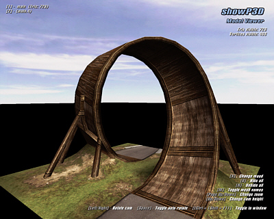

When
launching “showp3d.exe” with parameter “-windowed” after the file argument,
it will start in windowed mode.
When
launching “showp3d.exe” with parameter “-windowed” after the file argument,
it will start in windowed mode.Location: [crashday]\tools\showp3d

Interface
of ShowP3D
ShowP3D is a utility designed to view any Crashday .p3d model file using the in-game engine. To do so, start ShowP3D.exe using the command line tool and pass in the path and name of the .p3d as the first argument. Much easier however is to simply associate .p3d files with ShowP3D.exe in Windows using the "Open With..." dialog.
ShowP3D allows you to hide or unhide any 3D mesh contained in the .p3d by simply hitting the related key next to the mesh's name. The explanation and shortcuts for any other commands is available on-screen when you run the program.
When
launching “showp3d.exe” with parameter “-windowed” after the file argument,
it will start in windowed mode.